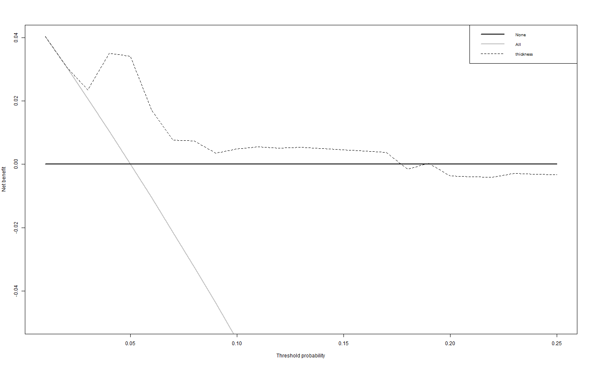
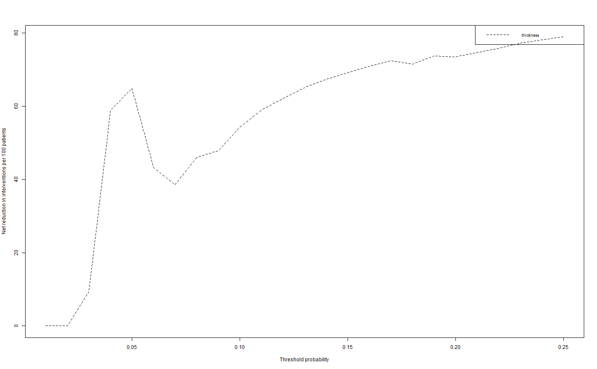

Diagnostic and prognostic models are typically evaluated with measures of accuracy that do not address clinical consequences. Decision-analytic techniques allow assessment of clinical outcomes but often require collection of additional information may be cumbersome to apply to models that yield a continuous result. Decision curve analysis is a method for evaluating and comparing prediction models that incorporates clinical consequences, requires only the data set on which the models are tested, and can be applied to models that have either continuous or dichotomous results. The stdca function performs decision curve analysis for time to event or survival outcomes. See http://www.decisioncurveanalysis.org for more information.
stdca(data, outcome, ttoutcome, timepoint, predictors, xstart = 0.01, xstop = 0.99, xby = 0.01, ymin = -0.05, probability = NULL, harm = NULL, graph = TRUE, intervention = FALSE, interventionper = 100, smooth = FALSE, loess.span = 0.1, cmprsk = FALSE)
| data | a data frame containing the outcome of the outcome predictions. |
|---|---|
| outcome | the outcome, response variable. Must be a variable contained within the data frame specified in data=. |
| ttoutcome | time to outcome, response variable. Must be a variable contained within the data frame specified in data=. |
| timepoint | specifies the time point at which the decision curve analysis is performed. |
| predictors | the predictor variable(s). Must be a variable(s) contained within the data frame specified in data=. |
| xstart | starting value for x-axis (threshold probability) between 0 and 1. The default is 0.01. |
| xstop | stopping value for x-axis (threshold probability) between 0 and 1. The default is 0.99. |
| xby | increment for threshold probability. The default is 0.01. |
| ymin | minimum bound for graph. The default is -0.05. |
| probability | specifies whether or not each of the independent variables are probabilities. The default is TRUE. |
| harm | specifies the harm(s) associated with the independent variable(s). The default is none. |
| graph | specifies whether or not to display graph of net benefits. The default is TRUE. |
| intervention | plot net reduction in interventions. |
| interventionper | number of net reduction in interventions per interger. The default is 100. |
| smooth | specifies whether or not to smooth net benefit curve. The default is FALSE. |
| loess.span | specifies the degree of smoothing. The default is 0.10. |
| cmprsk | if evaluating outcome in presence of a competing risk. The default is FALSE |
Returns a list containing the calculated net benefit, ADD MORE
library(MASS) library(survival) data.set <- Melanoma data.set$diedcancer = ifelse(data.set$status==1, 1, 0) result1 = stdca(data=data.set, outcome="diedcancer", ttoutcome="time", timepoint=545, predictors="thickness", probability=FALSE, xstop=.25)#> Warning: 'newdata' had 1 row but variables found have 205 rows#> [1] "thickness converted to a probability with Cox regression. Due to linearity and proportional hazards assumption, miscalibration may occur."result2 = stdca(data=data.set, outcome="diedcancer", ttoutcome="time", timepoint=545, predictors="thickness", probability="FALSE", xstop=.25, intervention="TRUE")#> Warning: 'newdata' had 1 row but variables found have 205 rows#> [1] "thickness converted to a probability with Cox regression. Due to linearity and proportional hazards assumption, miscalibration may occur."